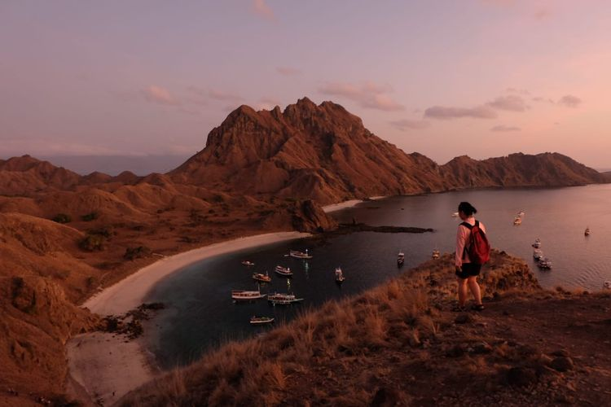
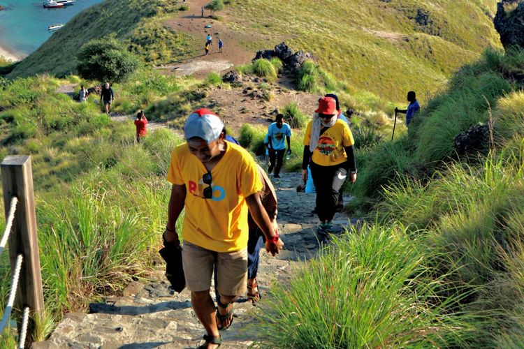

Pulau Padar
Daya Tarik Pulau Padar Labuan Bajo Pulau Padar merupakan tujuan utama ke Labuan Bajo, selain Pulau Komodo. Untuk menikmati keindahan Pulau Padar, wisatawan harus mendaki melalui sekitar 818 anak tangga. Keindahan Pulau Padar akan mulai terlihat pada 100 anak tangga pertama. Rasa lelah selama mendaki akan hilang pada saat sampai di puncak. Wisatawan dapat meilihat laut yang biru dan hijaunya pepohonan di setiap pulau di kawasan ini. Di sini, wisatawan dapat memuaaskan hobi berfoto dengan panorama alam. Keindahan Pulau Padar juga didukung dengan adanya larangan merokok di kawasan ini dan kebersihan yang sangat terjaga.
Pulau Padar merupakan salah satu dari tiga pulau besar di Taman Nasional Komodo, dengan luas sekitar 173.300 hektar. Dua pulau lainnya, yaitu Pulau Rinca dan Pulau Komodo. Pulau Padar lebih dekat dengan dengan Pulau Rinca dari pada Pulau Komodo. Pulau Padar dan Pulau Komodo dipisahkan oleh Selat Lintah sehingga jaraknya lebih jauh. Di sekitar Pulau Padar terdapat tiga atau empat pulau kecil lain. Pulau Padar tidak dihuni Komodo. Pulau Padar tercatat sebagai Situs Warisan Dunia UNESCO, hal tersebut lantaran wilayahnya berada di Taman Nasional Komodo. Kawasan Taman Nasional Komodo merupakan habitat alami komodo serta berbagai jenis fauna lainnya. Taman Nasional Komodo menampung kurang lebih 1.000 spesies ikan, tujuh spesies paus, sepuluh jenis lumba-lumba, dan 40 burung serta penyu hijau.
Tiket Masuk Pulau Padar Labuan Bajo
Pulau Padar merupakan pulau besar yang termasuk dalam kawasan Taman Nasional Komodo.
Dilansir dari akun instragram resmi Balai Taman Nasional Komodo, Kementerian Lingkungan Hidup dan Kehutanan. Harga tiket masuk kawasan Taman Nasional Komodo untuk Warga Negara Indonesia sebesar RP 5.000/orang/hari setiap Senin hingga Sabtu dan Rp 7.500/orang/hari setiap Minggu dan Hari Libur.
Sedangkan harga tiket untuk Warga Negara Asing sebesar Rp 150.000/orang/hari setiap Senin hingga Sabtu dan Rp 225.000 orang/hari setiap Minggu dan Hari Libur. Tarif mendaki (trekking) Rp 5.000 orang/hari/lokasi. Pembelian paket trekking bersama dengan pengamatan kehidupan liar. Harga tiket pengamatan kehidupan liar sebesar Rp 10.000/orang/hari/lokasi.
Cara ke Pulau Padar Labuan Bajo
Bagi wisawatan yang ingin menikmati keindahan Pulau Padar dapat memulai perjalanan dari Pelabuhan Labuan Bajo. Perjalanan ke Pulau Padar dari Pelabuhan Labuan Bajo dapat dilakukan melalui perjalanan laut dan tidak ada perjalanan darat Wisatawan dapat memilih menggunakan speedboat atau kapal kayu. Waktu tempuh menggunakan speedboad sekitar dua jam dan kapal kayu sekitar empat jam. Perjalanan ke Pulau Padar dapat dimulai dari pukul 06.00 dan kembali ke Labuan Bajo sekitar pukul 16.30 WIB